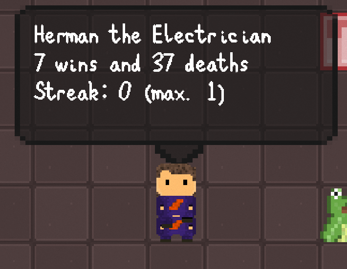
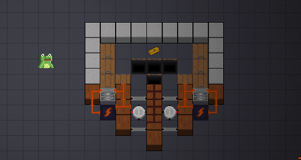
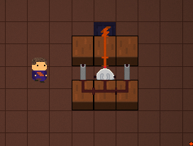
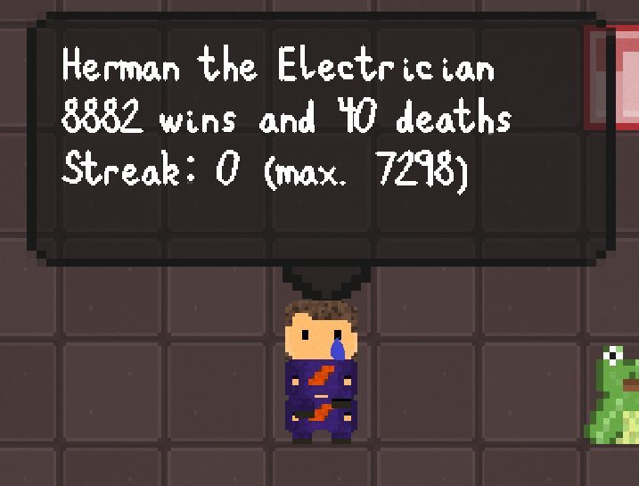
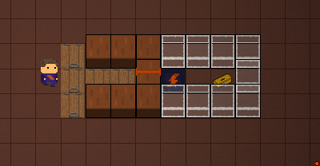

A couple weeks ago, I added a feature to Herman Electro that had been on my to-do list for a long time: win streaks.
The idea was pretty simple. Every time you won as a character, that character’s personal win streak would go up by one, as would the total win streak. Losing would bring your win streak for that character, as well as the total win streak, back to zero. The game would show your current and maximum win streaks as each character and for the entire game.
I figured there was no harm in showing as many statistics a possible, outside a bit of clutter. Some players would really enjoy seeing these stats and measuring their performance. Players who didn’t care could just ignore the stats.
So I was very surprised to see these messages from one of the developers in the Herman Electro Slack:
“Okay, streak stats are terrifying.”
And a minute later:
“Literally instantly quit the game. I’m not playing if there are streaks.”
This seemed like a pretty extreme reaction to a stat I had spent half an hour implementing and hoped people would enjoy. I’m skeptical she really planned to stop playing the game we’d been working on for nearly four years, or that any player would have genuinely reacted so strongly.
But I also felt obligated to think about the topic for a bit. Could data have a negative impact on player psychology? Was showing streak and win/loss data somehow irresponsible?
That was when I remembered something I’d encountered years ago: the Doodle Jump Dilemma.
The Doodle Jump Dilemma
About 10 years ago, Doodle Jump took the world by storm. It was one of my favorite mobile games, and I spent a lot of time playing it and comparing scores with my friends.
That is, until I looked at the stats page.
I love looking into statistics and data, and at first, I was fascinated by the information offered by Doodle Jump. There was data on total games played, total play time, maximum score, etc. One statistic troubled me, though: average score.
It was the best metric of skill, really. Anyone can have a lucky game, but the average score is what truly represents your skill level. Suddenly, I became unable to play Doodle Jump as I once could. No longer could I hold the phone upside-down to see how that would impact my play; after all, my average score was at stake.
As I played more, it became harder and harder to change my average score. Eventually, I gave up. My skill level was fixed, and I could not overcome my past mistakes. I was a 13,000 average score kind of guy.
What especially troubled me about the average score statistic was how immutable it was. Improving at the game didn’t feel as exciting when I couldn’t shift that statistic. At the same time, in hopes of not ruining my average score statistic, I couldn’t just have fun anymore; I had to perform at a high level for every game of Doodle Jump.
Maybe Herman players would feel the same way. If streaks matter, they can’t just mess around for a bit or try out cool item combinations. Every game counts toward the streak, and while it’s important for the game to be impactful, it’s also important that players can experiment freely sometimes.
The Problem with High Scores
Another favorite mobile game of mine is Traffic Rush, a game about monitoring traffic and swiping cars across the road while avoiding crashes. I used to play frequently, until I had the best playthrough of my life.
It was incredible. For fifteen or twenty minutes, I was swiping furiously, narrowly dodging collisions and watching my score soar past its previous highs. Only when I slipped up and rammed one car into another was I able to take a breath. I wasn’t even upset. I felt like a champion.
After that playthrough, though, I lost interest in the game. I knew I would likely never surpass my high score, and because of that, the game lost meaning for me. The effort required to beat my existing high score was not worth the minimal benefit.
If Herman showed your maximum streak, players would have another meaningful goal to work towards. But the game already has meaningful goals, and once a player achieved a new maximum streak, it’s possible the player would give up on improving further.
Different players may approach high scores in different ways, but for some players, the mere presence of a high score can become demotivational.
In Search of a Solution
Statistics can be frustrating, but they can also be fun. Some segment of the player population will be interested in data on their performance, and improving concrete metrics of their ability can be a driving force to play further. Getting rid of statistics isn’t a good solution; it is beneficial for players who don’t care about stats, but it hurts players who do.
How can statistics be used to motivate players without the risk of eventually demotivating them? I came up with an idea: using positive statistics, not negative ones.
In League of Legends, a variety of statistics are shown. Players can see their total wins and losses, their performance in the competitive ranked mode, and a recent match history. The game uses statistics and rankings successfully in a number of ways, and two in particular stood out to me:
First, a player’s ranking is fluid. While climbing the ranks can be difficult, a player who belongs in a higher rank will eventually make it to that rank, even if they played thousands of games at a lower skill level. Basically, past mistakes are not factored into rank so much that they can’t be overcome.
Second, the statistics most apparent to players are generally "positive ones" -- that is, ones that increase consistently without becoming too difficult to improve. (This isn't an officially recognized term, but it should help clarify the subject. Negative statistics would then be those that increase steadily but represent bad play instead of good play, such as number of losses; neutral statistics will, for our purposes, be statistics that eventually reach a point where they don't really change at all.)
Number of wins in normal (non-ranked) games was one of the most common statistics I came across in League of Legends. It’s a statistic that can only improve over time, and it always gives the player a reason to keep playing. A loss is not a big deal, and a win will improve the overall wins statistic, so there’s no reason not to play, even if you aren’t able to play at peak performance. League of Legends also shows the results of the last 20 games a player has played. This match history gives enough detailed information to help a player improve while still allowing the possibility of playing another 20 games and erasing past losses from the match history list.
Positive statistics are purely motivational to players. Increasing your number of wins, number of tools used, or number of unlocks can only represent improvement, and making a mistake doesn’t do any harm. Negative statistics, on the other hand -- number of losses, number of tools wasted, etc. -- could paralyze players and make them feel anxious to play again. More neutral statistics, such as a high score, can be motivational or demotivational -- beating a previous high score might drive some players to improve, but an existing high score can also intimidate players if they feel they will never be able to top it.
After considering player psychology and how statistics will motivate or demotivate play, I decided to put more emphasis on positive statistics instead of negative or neutral ones. Data is interesting to some players, but it needs to be used responsibly.
I hope you enjoyed the column. Feel free to share any thoughts on statistics in video games or your personal experiences with the games I discussed. I’ll see you next week.
_________
If you have any questions or comments, feel free to email us at hermanelectrogame@gmail.com. You can follow our progress and see more posts and gifs on our Twitter account, @HermanElectro.